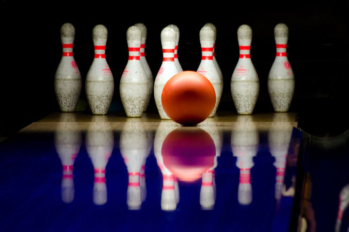

PAST (5200 B.C)
Remnants of bowling balls were found among artifacts in ancient Egypt going back to the Egyptian protodynastic period in 3200 BC. What is thought to be a child's game involving porphyry (stone) balls, a miniature trilithon, and nine breccia-veined alabaster vase-shaped figures—thought to resemble the more modern game of skittles—was found in Naqada, Egypt in 1895.